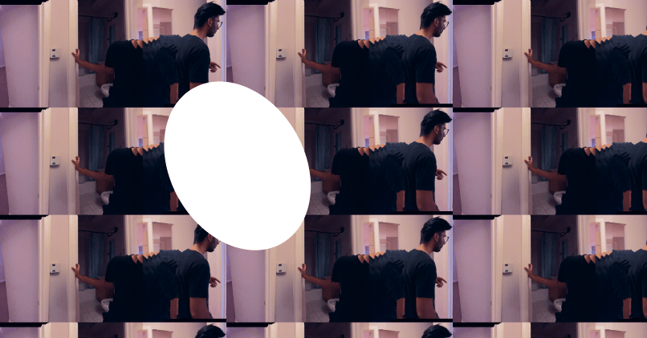
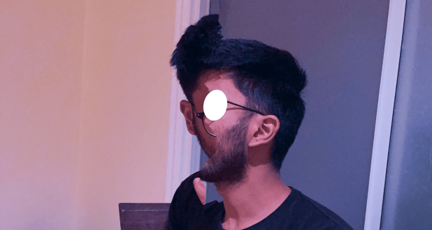
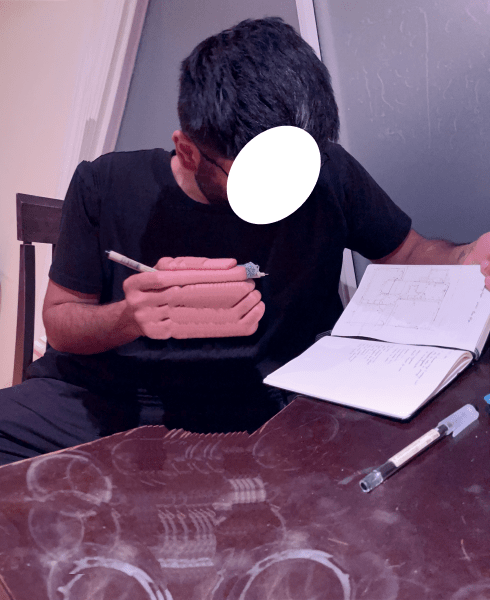

"I don't want to take it with me but I don't want to get rid of it."
We look at the mess in front of us. Where did it come from? Clutter is an unexpected byproduct of curiosity. A few things we've been Googling: How do you get rid of expired nutrition supplements without poisoning things? How do you get rid of lighters without causing fires? How do you get rid of mirrors without cutting someone?
Another year around the sun, and the idea of home remains elusive as ever. We're moving our stuff out of the house that sheltered us through the pandemic. We cooked, cleaned and faced the warping of reality together here. In the basement, we made the strangest music, letting our instruments transmute confusion into wonder. In the backyard, we stood sipping tea, peering towards Silicon Valley in the horizon. We've emptied out the rooms that served as containers for our renewal. In the absence of all furniture, we hear our voices bouncing off the walls, landing on top of themselves. We have only one certainty: there's no going back.
Ancient scriptures say that we are all just one divine being split into billions of fragments. Otherwise, it gets too lonely in the infinite expanse of the cosmos. Separateness is an illusion. It's a game we play as a hedge against boredom. We separate, only to become more aware of our oneness.
We walk in the middle of the street through empty neighborhoods. We walk under streetlights, surpassing our shadows, only to see them catch up. We climb hills and see ports and highways lit up in the distance. We see the city approaching. We guess where shelter is located by looking for towers behind fog.
There is reality as we want it to be, and there's reality as it is. There are things that don't go away no matter how tightly we close our eyes and cover our ears. The cosmic playhead moves into the future. We move along with it. As far as we can tell, we can't reverse its course. As seconds turn into minutes and minutes turn into hours, the hunger in our bellies grows more pronounced. We're compelled to look for food. Out in the distance, the ocean undulates. It is beautiful, but it can swallow us whole.